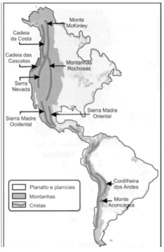
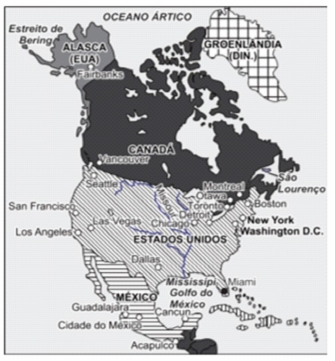

CLIENTES - POLOS

Tenha acesso a provas sem fazer precisar fazer login. Para ter acesso a centenas de simulados de provas para estudar, tudo de forma rápida, simples e segura, faça o login com seu RA e senha.SAIBA MAIS
Disciplina: 679460 - Organização do espaço: Estudos de Território e América
Questão 1: Sobre o conjunto do relevo da América, observe o mapa a seguir.  O mapa nos permite concluir que: A) Os dobramentos modernos ocorrem na porção oeste do continente. B) As grandes formações montanhosas são resultantes de uma atividade sísmica que ocorre em todo o continente e com a mesma intensidade. C) Nos planaltos antigos, que se encontram a Leste do continente, observam-se as maiores altitudes. D) Os planaltos recentes de grande instabilidade geológica se concentram na porção oriental. E) As planícies só se observam na porção central da América.
Questão 2: A Aliança do Pacífico (em espanhol: Alianza del Pacífico) é um bloco comercial latino-americano criado formalmente em 6 de junho de 2012 no Chile, mais especificamente no Observatório Paranal em Antofagasta, durante a 4.a Cúpula da organização. Os membros fundadores foram o Chile, a Colômbia, oMéxico e o Peru. A Costa Rica incorporou-se ao grupo em 2013. Sua formação segue as tendências de blocos já existentes na América. Qual é o objetivo dessa aliança? A) Propor um comércio livre e integração econômica, com uma "orientação clara em direção à Ásia". Para tal, estão negociando uma política conjunta de redução agressiva da tarifa de exportação entre suas fronteiras,englobando a totalidade dos produtos, tarifa essa a ser eliminada completamente dentro de cinco anos. B) Solucionar, definitivamente, problemas ambientais relacionados às bacias que integram os paísesmembros, sobretudo nos projetos de construção de hidrelétricas e atividades de garimpo, que diminuem a piscosidade, devido ao uso do mercúrio. C) Formar um fórum de discussão que busque alternativas para as crises do Capitalismo, do sistema financeiro. Pretende-se criar uma regulamentação severa do sistema financeiro, com o objetivo de evitar crises especulativas. D) Formar um fórum ideológico antiamericano que traga propostas reais e alternativas para a reorganização da América, minimizando a influência da superpotência estadunidense e do seu Imperialismo. E) Elaborar núcleos de pesquisa que orientem projetos econômicos de desenvolvimento, com geração de emprego, e intensificar a atenção comercial para o Atlântico.
Questão 3: Analise o mapa a seguir.  Ao analisarmos o continente americano do ponto de vista físico ou histórico, podemos afirmar que oMéxico pertence a duas "Américas" distintas. Qual alternativa explica essa condição. A) Esse país pertence à América Latina e à América Anglo-Saxônica. B) Esse país pertence à América do Sul e à América Anglo-Saxônica. C) Esse país pertence à América Latina e à América do Norte. D) Esse país pertence à América Latina e à América do Sul. E) Esse país pertence à América Latina e à América Central.
Questão 4: SO dia 1°-de maio de 2007 constitui o novo marco nas relações econômicas da América Latina. Nesse dia, os presidentes de dois países dessa porção do continente americano anunciaram a estatização e o controle absoluto de importantes recursos energéticos. Essas medidas não só rearticulam os encaminhamentos econômicos entre os povos latino-americanos, mas também indicam as novas posturas e configurações geopolíticas no continente. Os países a que se refere o texto, bem como os recursos energéticos de que dispõem, são, respectivamente: A) Colômbia, rico em petróleo, e Venezuela, rico em gás natural, ambos pertencentes à América Platina. B) Equador, rico em petróleo, e Bolívia, rico em gás Natural, ambos pertencentes à América Platina. C) Colômbia, rico em petróleo, e Venezuela, rico em gás natural, ambos pertencentes à América Andina. D) Venezuela, rico em petróleo, e Bolívia, rico em gás natural, ambos pertencentes à América Platina. E) Venezuela, rico em petróleo, e Bolívia, rico em gás natural, ambos pertencentes à América Andina.
Questão 5: de 1992, quando assinou o acordo de livre comércio que deu origem ao Nafta, o México tem experimentado avanços impressionantes. As exportações triplicaram e o país acumula grande superávit no seu comércio com os EUA. O PIB nacional atingiu a marca de US$ 600 bilhões em 2001, ultrapassando o PIB brasileiro. Graças ao crescimento econômico impulsionado pelas exportações industriais, o México apresenta hoje uma taxa de desemprego de 2,5% (uma das menores do mundo) e inflação anual de apenas 4,4%. (STEFANO, F.; ATTUCH, L. “Negócios na ALCA: a nova fronteira do lucro”.Isto É Dinheiro, p. 32-33, 08 maio 2002. Adaptado.) Sobre o texto anterior, considere as afirmações a seguir. I -Ao aceitar o convite norte-americano para integrar o Nafta, o governo do México desarticulou aestratégia brasileira de integração econômica do continente sul-americano, que consistia em fortalecer o Pacto Andino, do qual o México era signatário até então. II -A participação dos Estados Unidos no Nafta vai além da questão meramente econômica, já que umde seus objetivos é a criação de um número maior de empregos no México, com a finalidade de conter a entradade imigrantes ilegais mexicanos nos Estados Unidos. III -Liderando o Nafta, os norte-americanos também vislumbram a ampliação de suas vendas para o México, levando em conta o tamanho do mercado consumidor mexicano. Está correto o que se afirma em: A) I, apenas. B) II, apenas. C) III, apenas. D) I e II, apenas. E) II e III, apenas.
Questão 6: A política do Big Stick, estabelecida nos Estados Unidos da América no início do século XIX, consistiu: I -Numa reforma ampla do sistema policial, a fim de melhor reprimir as revoltas da população negra. II -Numa política interna por meio da qual se pretendeu corrigir os excessos do sistema federativo. III -Numa política externa por meio da qual se pretendeu reservar o direito de intervir na América Latina. Assinale a alternativa correta. A) Apenas a afirmação III está correta. B) Apenas a afirmação I está correta. C) As afirmações I, II e III estão incorretas. D) Apenas a afirmação II está correta. E) As afirmações I e II estão corretas.
Questão 7: A América Platina é uma subdivisão da América do Sul. Essa região é composta por três países que são banhados pelos rios que integram a Bacia hidrográfica do rio Prata. Essas três nações que formam a América Platina são: A) Peru, Chile e Bolívia. B) Argentina, Paraguai e Uruguai. C) Argentina, Brasil e Paraguai. D) Colômbia, Equador e Venezuela. E) Peru, Brasil e Paraguai.
Questão 8: Quais são as características da América Central? A) É constituída de grandes e pequenas ilhas, colonizadas pelos espanhóis e portugueses, apresentando baixo crescimento vegetativo. B) Área de intenso vulcanismo, economias independentes, mercado interno numeroso e população branca. C) Politicamente fragmentada devido ao processo de colonização, paisagens naturais baseadas na tropicalidade e economia baseada na exportação de produtos agrícolas. D) Relevo montanhoso, economia baseada no comércio de minerais e predomínio de governos monárquicos. E) Agricultura diversificada, voltada, sobretudo, para o mercado interno, intensa atividade turística e grande desenvolvimento da pecuária e de seus derivados.
Questão 1: Caracterize os países da chamada "República das Bananas".
Questão 2: Destaca-se na produção de cereais na região fértil do Pampa. A Oeste, na região do Piemonte Andino, destaca-se pela agricultura irrigada e, ao Sul, pelas frutas irrigadas. Identifique o país caracterizado no texto e cite o bloco regional do qual ele participa.
O Gerenciador completo do seu Polo
Se existe algo que tira a paciência e o sono de qualquer gestor em um negócio, é a demora para obter respostas que deveriam estar disponíveis rapidamente para auxiliar não somente em tomada de decisões como em ações comerciais que tragam dinheiro para a empresa.
Saiba mais
Rua Júlio Câmara, 706 - Anexo 1 - Centro, Afogados da Ingazeira - PE, 56800-000